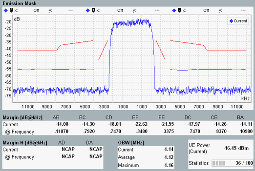

While an established connection is available, the UL signal of the UE can be monitored using a WCDMA measurement provided by option R&S CMW-KM400.
To ensure compatible measurement settings, the measurement must be coupled to the "WCDMA Signaling" application. This coupling is done by selecting the combined signal path scenario in the measurement. As a result the measurement application uses the most important settings of the signaling application, e.g. the RF settings.
The following example applies to a multi-evaluation measurement.
Proceed as follows:
Use the "WCDMA TX Meas" softkey to switch to the multi-evaluation measurement.
The measurement application is opened and the combined signal path scenario is selected automatically.
If necessary, select the "Multi Evaluation" tab.
Press the [Trigger] softkey followed by the "Trigger Source" hotkey. Select a trigger signal provided by the signaling application, e.g. the frame trigger signal.
Press "ON | OFF" to start the measurement.
The main view provides an overview of the measurement results.
To enlarge a diagram presented in the main view, perform one of the following actions:
Double-click it using a connected mouse.
Select it by turning the rotary knob. Open it by pressing the rotary knob.
The following example shows the enlarged "Emission Mask" view.

Other measurements can be used in a similar way. For a TPC or PRACH measurement you do not need to set the trigger source (step 2). The TPC measurement presents all results in a single view.